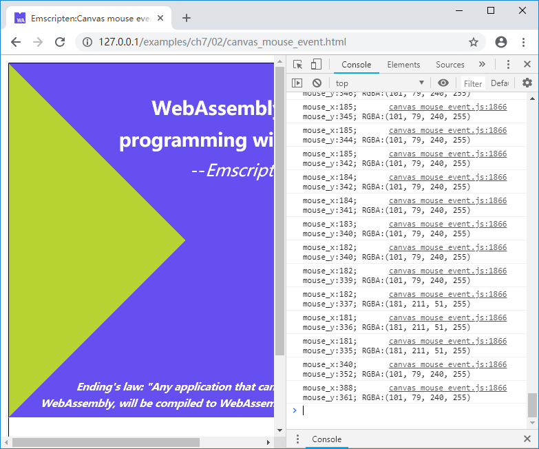

7.2 鼠标事件
在JavaScript中，为DOM元素附加事件非常容易。本节就以Canvas为例，介绍鼠标事件的响应方法。
本节的例程创建包含了一个Canvas的页面，当鼠标在Canvas上移动时将调用C函数，输出光标在Canvas中的坐标及该坐标处的像素的颜色（RGBA）值。
html部分代码如下：
//canvas_mouse_event.html
<canvas id="myCanvas"></canvas>
<script>
Module = {};
Module.onRuntimeInitialized = function() {
var image=new Image();
image.src="cover.png";
image.onload=function() {
var canvas = document.getElementById('myCanvas');
var ctx = canvas.getContext("2d");
canvas.width = image.width;
canvas.height = image.height;
ctx.drawImage(image, 0, 0);
var img_data = ctx.getImageData(0, 0, image.width, image.height).data;
var buf_addr = Module._get_img_buf(image.width, image.height);
Module.HEAPU8.set(img_data, buf_addr); //copy img_data to Emscripten
canvas.addEventListener("mousemove", onMouseMove, true);
}
}
function getPointOnCanvas(canvas, x, y) {
var bbox = canvas.getBoundingClientRect();
return {
x: x - bbox.left * (canvas.width / bbox.width),
y: y - bbox.top * (canvas.height / bbox.height)
};
}
function onMouseMove(event) {
var canvas = document.getElementById('myCanvas');
var loc = getPointOnCanvas(canvas, event.clientX, event.clientY);
Module._on_mouse_move(loc.x, loc.y);
}
</script>
<script src="canvas_mouse_event.js"></script>
在Module的onRuntimeInitialized()回调时，创建了一个Image对象，加载cover.png图片，图片加载完成后，被更新至Canvas，同时位图数据被复制到C环境中。canvas.addEventListener()为鼠标移动添加了事件响应函数，当鼠标移动时，onMouseMove()函数将被执行。onMouseMove()函数将光标从窗口坐标转为Canvas坐标后，调用C导出函数Module._on_mouse_move()执行颜色拾取操作。
C代码如下：
uint8_t *img_buf = NULL;
int img_width = 0, img_height = 0;
EM_PORT_API(uint8_t*) get_img_buf(int w, int h) {
if (img_buf == NULL || w != img_width || h != img_height) {
if (img_buf) {
free(img_buf);
}
img_buf = (uint8_t*)malloc(w * h * 4);
img_width = w;
img_height = h;
}
return img_buf;
}
EM_PORT_API(void) on_mouse_move(int x, int y) {
if (img_buf == NULL) {
printf("img_buf not ready!\n");
return;
}
if (x >= img_width || x < 0 || y >= img_height || y <0) {
printf("out of range!\n");
return;
}
printf("mouse_x:%d; mouse_y:%d; RGBA:(%d, %d, %d, %d)\n", x, y,
img_buf[(y * img_width + x) * 4],
img_buf[(y * img_width + x) * 4 + 1],
img_buf[(y * img_width + x) * 4 + 2],
img_buf[(y * img_width + x) * 4 + 3]);
}
get_img_buf()函数与上一节例子中的一致，用于分配保存位图数据的缓冲区；on_mouse_move()函数根据传入参数进行颜色拾取和日志输出。
使用以下命令编译：
emcc canvas_mouse_event.cc -o canvas_mouse_event.js
浏览页面后，在Canvas上移动鼠标，控制台输出如下：
